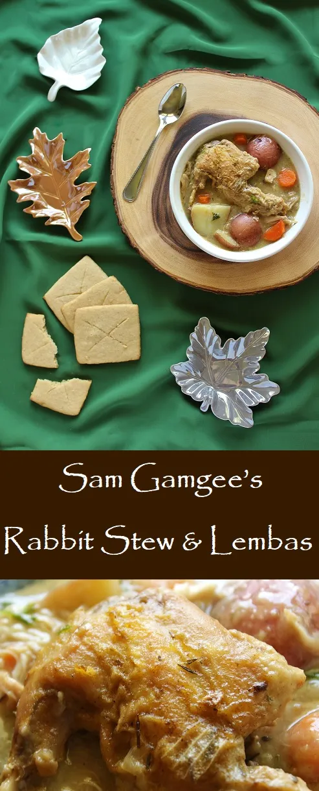

Sam Gamgee's Rabbit Stew

“What a hobbit needs with a coney,” he said to himself, “is some herbs and roots, especially taters—not to mention
bread. Herbs we can manage, seemingly…a few bay leaves, some thyme and sage will do—before the water boils.”
Finally back around forest greenery, Sam and Gollum foraging for ingredients and cooking this stew takes up about half
of this chapter from The Two Towers, appropriately named "Of Herbs and Stewed Rabbit."
Ingredients:
- 2 rabbits (roughly 2lbs each)
- 1 cup flour, separated
- 1/4 cup olive oil
- 1 yellow onion
- 1/2 TSP salt
- 1/4 TSP pepper
- 1/2 TSP thyme
- 1/2 TSP sage
- 1 bay leaf
- 8 cups vegetable stock
- 6 small or 4 large red PO-TA-TOES
- 3 carrots
- 2 TBSP snipped fresh parsley
Steps:
-
Cut away the rib bones and saving them for rabbit stock, along with the spines. This helps avoid the issue of super
small bones in your stew. You can technically cut away all the bones, but I like to leave most of them in. They keep the
meat from drying out and add a little extra flavor.
-
Pour 3/4 cup of the flour on a plate. Heat the oil over medium heat in a large stock pot. Working in small batches,
dredge the rabbit pieces in the flour and brown the pieces for 3-5 minutes on each side in the oil, removing them to a
clean plate when each batch is done. Dice the onion and set aside.
-
Transfer all the browned rabbit pieces back to the stock pot. Add the onion, seasonings, and vegetable stock. Stir to
combine. Heat to boiling, then turn the heat to low and simmer for 2 hours, stirring occasionally. While you wait, peel
and chop your carrots and quarter your potatoes.
-
Add the carrots and potatoes and cook for 20 minutes more or until the potatoes are cooked through. Whisk the remaining
1/4 cup flour with 1/3 cold water until smooth and whisk it into the pot, along with the parsley. Allow to heat,
stirring regularly, until the mixture has thickened (approximately 5 minutes).
...and of course...